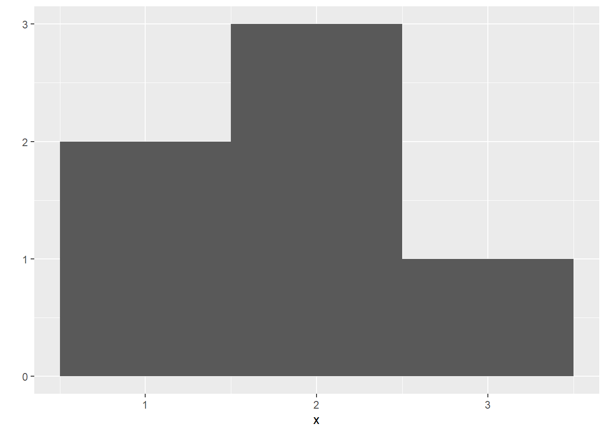

1+1 #Here we are asking R to calculate the sum of 1 and 1[1] 2This first chapter summarized all the basic information for understanding how R works.
Before starting with Rstudio functioning, it is essential to briefly summarize the terminology and different elements used in programming.
In Rstudio there are two ways of running a command, in other words telling the system to do a task: we can press “ctrl” “Enter”, or we can click on the “Run” icon in the tool bar. We can also cancel a command by pressing “ctrl” “c”.
Rstudio will take everything that we write in the Script Editor or console as a command, and if we want to add a comment in our command we should write “#” before, R will understand that what comes after is not a command. When we command something in the console, the results appear with a number in brackets, for example:
1+1 #Here we are asking R to calculate the sum of 1 and 1[1] 2As can be seen in the example above, when we command “1+1” we get the result is “2”. However, there is “[1]” before it. The number in brackets enumerates the values from the results, in this case, “2” is the first value from our results. This example also shows that the hashtag allows us to include comments in our script which will help to understand it better.
RStudio works best with vectorized data. A vector is a basic data structure that represents an ordered collection of elements of the same data type, and it can for example be a one-dimension set of numbers, such as the one bellow:
1:6[1] 1 2 3 4 5 6In this example, we have used the operator “:” which gives as a result a group of numbers between 1 and 6. This group of number is what we call a vector.
If we would like to reuse this vector, then we would need to first save them. For this, Rstudio allows us to generate an object. In the context of RStudio, an object refers to a data structure that holds a value or values. We need to be careful when naming objects, if they start with a number or a special symbol Rstudio will not be able to run it. Also, we need to keep in mind that Rstudio is affected by the capital letters and “House” and “house” are two different things for R. Moreover, we can’t forget that R overwrites the object names, we can always which names have been already assigned by running 1s()
Following up with the previous example we can create an object for the vector, so later on, we will be able to use it in other operations.
a <- 1:6 #we generate the object named "a" and it will contain the result of the operation "1:6"
a[1] 1 2 3 4 5 6Now we will have an object named “a” in our environment which contains the vector (1, 2, 3, 4, 5, 6), and if we want to operate with it we just need to write the name of the object (a) in our command, such as:
a+2[1] 3 4 5 6 7 8As it can be seen in the example, when we sum 2 to the vector named “a”, R does element-wise execution, in other words, it sums 2 to every element in our vector, in this example: (1+2, 2+2, 3+2, 4+2, 5+2, 6+2). R will also element-wise execution when operating with two vectors, and if these do not have the same lengths, R will repeat the short one as long as the long one, this is known as vector recycling.
However, if we would like to do a traditional matrix operation, we should include “%” before and after our operation, for example:
a%*%a [,1]
[1,] 91A function is the task that we ask R to realize, it contains the operations or calculations that can be applied to input data. Some of examples of functions can be the ones bellow:
round(2,1)[1] 2mean(a)[1] 3.5sum(a)[1] 21sample(a)[1] 6 4 5 1 2 3c(1, 5, 12, 20)[1] 1 5 12 20There are many functions that we can use in Rstudio, and all of them are composed by three main parts: a name, a body of the code and a set of arguments, for instance the one below:
ana <- function(){
b <- c(1, 2, 3, 4, 5, 6)
b <- sample(b, size = 2)
sum(b)
}
ana ()[1] 5In this example the name of the function is “ana”, the body is everything that come in between the ““{}” and the arguments in this case are values that input for the functions, such as in the case of “sample()” the arguments are “b” (the data set that we are imputing) and “size =2” (how many values do we want that R gets out of this data set). Note that if we don’t know which are the arguments for a function we can always use “args(the name of the function)2 in the console and it will give us a description how to imput the arguments. Now that we have name the function we can just write the name instead of rewriting the entire function body, as it can be seen in the example”ana()” gives the output of the entire function.
We also put an argument in the function, such as “ana(b2)”, now the function “ana” will only work when we input what the argument “b2” is, for instance:
ana <- function(b2){
b3 <- sample(b2, size = 2)
sum(b3)
}
#ana() gives us error because we have not defined what "b2" isana <- function(b2){
b3 <- sample(b2, size = 2)
sum(b3)
}
ana (b2 = 1:4) #Here we define what "b2" is and Rstudio can run the function "ana()" for it[1] 4?apply #Note for myself: look it up ### Packages
We can build up our own functions, but can also use these that other people have already coded. For this, we have to install packages and load their libraries. A package is a collection of R functions, data sets, and compiled code in a well-defined format, while a library refers to a directory where installed packages are stored on your computer. When you install a package, its files are copied to a specific location on your system. This location is referred to as the library. So, depending on our aim we will install different packages and load their libraries. Note that we only need to install a package once, but we need to load its library every R session we want to use it.
For instance, “qplot” is a function used for making quick plots in R, but it is part of the package”ggplot2”, so for being able to use it, we must install the package and load the library:
#install.packages("ggplot2") to install the package (I don't want to run because I alredy have it)
library(ggplot2) #load the function
x <- c(1,1,2,2,2,3) #define the data
qplot(x, binwidth = 1) #the function and the arguments we want to useWarning: `qplot()` was deprecated in ggplot2 3.4.0.
Each package uses different functions, and it might be confusing to know how they operate and how to input the augments. R comes with a “Help” option, if we write in the console “?packagename”, where packagename refers to the actual name of the package, we will will the information about how to use it. Note that for being able to get the help, the package need to be installed before.